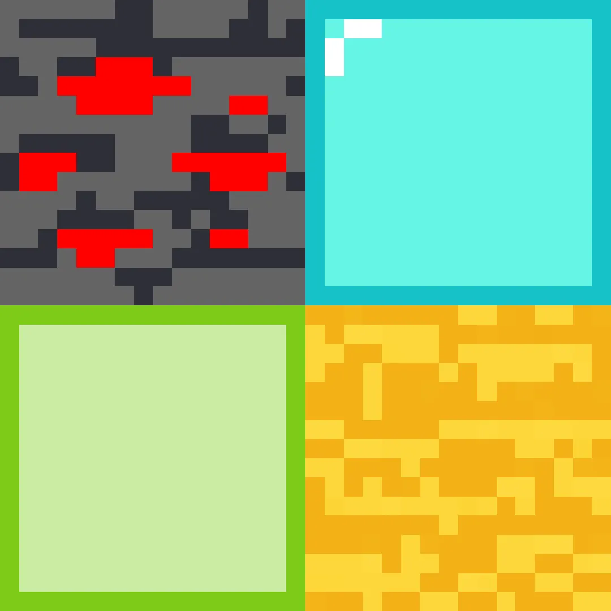

I am a Visual Design enthusiast and YouTuber
0
Subscribers
0
Views
0
Videos
I upload videos on gaming, creative work, cubing, unboxings and so much more.
I try to keep the content a big variety of different things to appeal to a large audience, so feel free to subscribe!
I make and create simplistic Minecraft addons and worlds for anyone to use.
A simple texture pack that gets straight to the point
I also like simplistic UI/UX's, like OneUI!
These icons in particular were made by me, a recreation of OneUI 4's icons